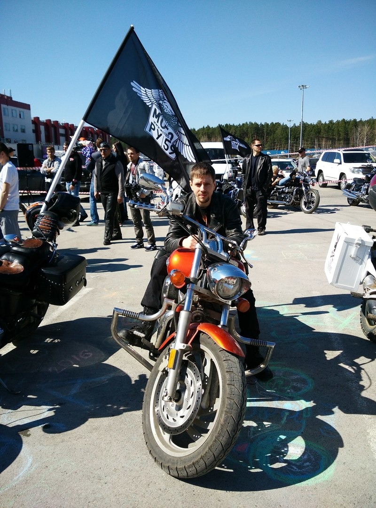
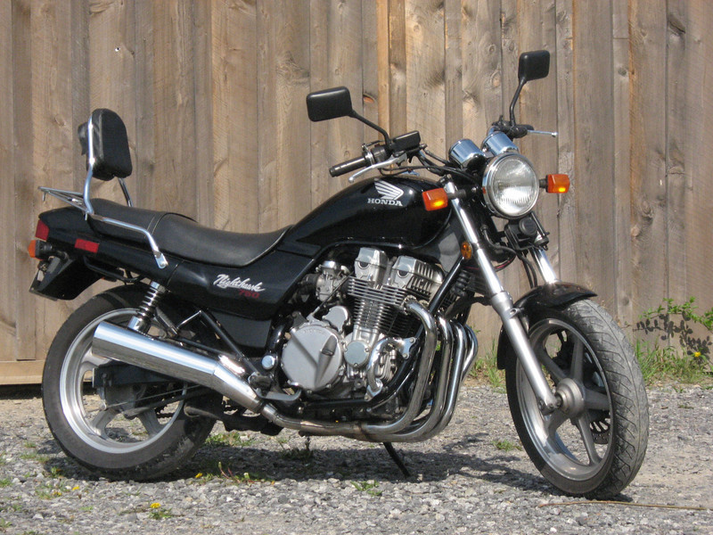

Закрыть гештальт наглухо

Сегодня одна моя хорошая знакомая написала мне, что хочет "закрыть гештальт" и приобрести себе мотоцикл, просила рассказать, что ей лучше знать до воплощения этой идеи в жизнь. Я вспомнил себя лет шесть тому назад и то, как я закрывал свой аналогичный гештальт, и к чему это привело в итоге. Да, возможно, я имею довольно специфические взгляды на авто и мото, чтобы давать кому-либо советы, но с другой стороны это и хорошо, это покажет другую сторону, точнее, попытаюсь показать обе. Подобные вопросы мне задавали и раньше и судя по характеру вопросов, владение мотоциклом представляется людям чем-то исключительно романтическим. Они видят этот образ, представляют, как они будут ездить на работу и обратно, как будут уезжать в закат и... И всë собственно. Никаких сложностей, никаких проблем, никаких неудобств. Ладно, начнëм с хоршего, закончим всем остальным.
Как всё начиналось

Лет эдак шесть тому назад, когда я работал в Xsolla, зачастую я оставался допоздна. Так же допоздна иногда задерживался мой хороший друг и по совместительству сослуживец, которого я сколько себя помню, всегда называл "Антонио". К тому моменту он уже прочно был мотоциклистом и успел сменить свою Yamaha YBR125 на Honda CB750 Nighthawk - очень достойный аппарат, надо сказать. И вот, однажды мы закончили работу существенно позднее, нежели последний автобус благополучно добрался до своего гнезда и Антонио предложил меня подбросить до дома на своём коне. Я уже не особо помню, насколько легко я тогда на эту авантюру согласился, но важно лишь то, что всё-таки согласился. На тот момент у меня был полный набор стандартных предрассудков о мото, какой имеют большинство людей, далёких от этой темы. Мне был выдан шлем, осуществлён "предполётный" инструктаж, мы погрузились на мото и он меня повёз. Ночь, тишина, мерно бухтит двигатель, дорога плывёт в свете фонарей мимо. Антонио ведёт аккуратно, спокойно, машин вокруг практически нет, мот идёт мягко и чувствуется в этом всём какое-то волшебство и непонятное ощущение, что вот в таком состоянии ехал бы м ехал не останавливаясь годами по пустой дороге и ничего больше не надо. Одним словом, позитивных впечатлений и ощущений я от поездки на мото получил массу.
Заболевание прогрессирует
Сижу дома, никого не трогаю, примус починяю. Звонит Антонио, спрашивает, чем я занят. Так как примуса у меня не было, то занят я был ничем. Антонио меня подобрал и таким образом я попал на закрытие сезона. Впечатлений опять была масса. Я ходил между рядов мотоциклов, смотрел во все глаза и во мне начинало просыпаться новое чувство эстетического восприятия этих прекрасных машин. Помню, я завис возле какого-то круизëра и пожирал его глазами, вероятно, это был боливард 1800, сейчас я уже не помню. И тут рядом возник его хозяин. Здоровенный такой мужик, на две головы меня выше и в плечах как двери зимнего дворца. Всë как положено - кожаная куртка, борода, суровая морда... Я тогда подумал, что мне сейчас презентуют волшебный пендель за избыточное внимание к мотоциклу и учитывая комплекцию хозяина, я рискую стать первым человеком, вышедшим в открытый космос без скафандра. Вместо этого я узрел чудесную метаморфозу - суровая морда озарилась жизнерадостной улыбкой во всю ширь и спросила - "Нравится?". Я только и смог выдавить из себя "АГА!", глядя на улыбающийся славянский шкаф. "Собираешься тоже мот брать?" - спросил сияющий верзила. Я промычал что-то утвердительное и тут понеслось. Мужик начал стремительно вводить меня в курс дела - какой мот сначала брать, на что обратить внимание, как лучше тормозить, как вести себя в момент начала дождя, как входить в повороты, чего стоит остерегаться и тому подобное. Я был просто поражëн тому, что незнакомый человек тратит на меня время, вполне серьëзно стараясь объяснить мне самое по его мнению важное, что может быть спасëт меня в будущем. Так я начал узнавать, что такое мотобратство. Затем я увидел Honda Magna 750 и влюбился в эти задранные глушители. Что-то меня зацепило во внешности этого мотоцикла и я начал им грезить. На закрытии в колонне он ехал впереди нас в соседнем ряду и мне безумно захотелось такой же.
Зимой и осенью мы с Антонио и нашей общей подругой несколько раз выбирались в заснеженный лес, где я учился ездить на мотарде. Это был BM Motard 250. На заснеженных укатанных дорожках в лесу я получил незабываемый опыт. Протектор был агрессивный, но шипов не было, поэтому заднее колесо юзом ходило влево и вправо на несколько десятков сантиметров. Но по-настоящему нижняя чакра превращалась в камень, когда юзом из под тебя уходило переднее колесо. Благо, падать в снег было совершенно небольно и потом не приходилось чистить одежду. Одним словом, всем, кто всë-таки собирается ездить на мото, советую попробовать поэндурить в зимнем лесу по дорожкам. После этого езда по ровному асфальту летом становится намного проще, а при каких-то проблемах со сцеплением заднего колеса с поверхностью, на уровне рефлексов включается подача газа, которая ставит колесо на место (как минимум пару раз меня это спасло от падения при переезде большой глиняной лужи в сельской местности).
Кульминационная фаза
Я болел мототемой и к следующему сезону накопил денег и приобрëл себе первый свой мотоцикл - Yamaha Dragstar XVS400. Прошëл посвящение в мотоциклисты, съездил в первый дальняк до екатеринбурга на байкфест и намотал первую тысячу километров (это было самым физически тяжëлым испытанием в моей жизни, но это отдельная история), сменил мото на Honda VTX1300C, получил массу положительных и отрицательных впечатлений и... И успокоился, перестал ездить. Причин несколько, об этом дальше.
Причина номер раз - проблемы со стоянкой
Сначала я ставил мотоцикл на подземной парковке в соседнем дворе. Ставил на пару ещë с одним товарищем. Там было место за колонной, недостаточное для того, чтобы поставить там машину, но вполне достаточное, чтобы туда вошли два мотоцикла, поскольку ставить и выводить их можно было по очереди. С нас брали по 750 рублей в месяц и вроде как всех всë устраивало. Потом на стоянке сменился владелец и со стоянки меня попросили, потому что "от моего мотоцикла пахнет бензином". Интересно, а чем от него должно пахнуть? Ромашками? Да, карбюратор у меня богатил, но не настолько, чтобы за мной стайкой бежали по проезжей части токсикоманы, отталкивая друг-друга локтями, чтобы занять место поближе. Через какое-то время ближе к сезону опять были какие-то изменения во "власти" на той парковке, я заходил, спрашивал, в итоге согласились, но запросили по 1500 с меня одного за месяц. Для меня это было многовато, если учитывать, что ездил я не каждый день.
Возле дома была охраняемая стоянка, стоял один сезон там. Периодически обнаруживал различные признаки того, что мотом активно интересовались. Причëм отмазка всегда была одна и та же - мол, я сам как мот оставил, так всë и стояло. Никто не подходил, никто ничего не трогал, никто не снимал чехол. Неоднократно замечал, что чехол надет не так, как я его оставлял - то тормозные диски не закрыты, то глушитель торчит, то ещë что-нибудь не так. Один раз обнаружил, что чехол надет задом наперëд. Конечно, охранник сказал, что это я так его и натянул. На вопрос, как часто он застëгивает ширинку у себя на ж..пе вразумительного ответа я от него не получил. Потом как-то я обнаружил отпечаток чьего-то ботинка на сидении. По объяснению охранника - это я наступил, когда слезал с мотоцикла. Честное слово, я не настолько силëн в камасутре! Я физически не представляю себе, как это возможно сделать при слезании с мотоцикла. Ах да, конечно, я же всегда танцую в грязных ботинках на два размера больше тех, что я ношу на на мотоцикле перед тем как отправиться домой! Это моя любимая фишка. Специально приношу с собой эти ботинки. Следующим и последним пунктом, переполнившим чашу терпения был сломанный поворотник. Конечно же, это опять я "где-то зацепил, когда ездил". Поворотники, если что, расставлены на меньшую ширину, нежели кофры и зацепить ими что-то я мог бы лишь в том случае, если бы мне оторвало кофры напрочь. Конечно же, они "просмотрели все записи со всех камер" и "никто не подходил и ничего не трогал". Ближайшее место, где можно поставить нормально мот, находится в половине остановки от моего дома и топать туда в мотоботах, неся с собой какую-нибудь поклажу и шлем - крайне сомнительное удовольствие.
Куда бы вы ни приехали, вы должны потратить минут 15 на то, чтобы закрыть мото чехлом, потому что найдётся множество тех, кто захочется на нём посидеть, пофотографироваться, походить ногами по сиденью, отломать поворотник или даже попытаться его угнать. Это всё вместо того, чтобы просто хлопнуть дверью авто. Потому что автомобилей рядом стоит масса, а ваш мотоцикл вот он, один такой красивый тут стоит.
Причина номер два - погодные условия
Зачастую у нас или дождь или жара. Езда в дождь - тоже из разряда не самых приятных вещей. Видели, как выглядят автобусы и автомобили после дождя? Первые покрыты грязью примерно на 2/3, вторые - по самую крышу. Теперь представьте, что всë это осядет на вас. Лично на вас. Особенно девушки с длинными волосами, представляющие себе, как они лихо подъедут к пункту назначения, изящно снимут с себя шлем (вообще-то сначала вы будете неизящно ковыряться с расстëгиванием липучек и молний на одной перчатке, потом на другой - представьте, потом с расстëгиванием застëжки шлема) и красиво тряхнут гривой волос (помятых и спутанных под экипом или обильно покрытых дорожной пылью/грязью). Одним словом, если хотите ощутить себя мотоциклистом, выйдите на дорогу и поваляйтесь на ней хорошенько. Что лежит на дорожном полотне, так или иначе окажется на вас. Количество зависит от погоды.
Хорошо, предположим, мы решили, что мы в дождь не выкатываемся и катаемся только при хорошей погоде. Предполжим, за окном 25 градусов тепла. Если мы находимся в междурядье, то к этим 25 градусам прибавляется тепло, которое выбрасывают кондиционеры стоящих вокруг автомобилей, тепло работающих двигателей, тепло выхлопа, тепло излучает нагретый асфальт... В общем, смело добавляем ещë градусов 10, получаем +35 градусов. Теперь надеваем пальто и шапку, чтобы жизнь мëдом не казалась. Да, в нормальном экипе есть вентиляция, но работать нормально она начинает с 50-60 км/ч. Если вы передвигаетесь по городу, маневрируете в пробках, стоите на светофоре, вентиляция не работает. А шлем - это в числе прочего - хороший слой пенопласта, который является неплохим теплоизолятором. И вот вы, совершенно мокрые, потные, воняющие сдохшим тиранозавром, завидуете людям, которые сидят в своих машинах под кондиционером и слушают свою любимую музыку. Единственное, чего вы хотите - это вылезть из прилипшего к телу экипа и залезть в прохладный душ. Романтика!
Добравшись до работы, вы должны во-первых, иметь с собой сменную одежду, в которую можно переодеться, во-вторых - желательно иметь возможность придя на работу принять душ. Даже если и то и другое у вас есть, после душа нужно вытереться и высушить голову (снова привет девушкам с длинными волосами). А на это всë необходимо время. То есть, сэкономили 20 минут при движении на работу и потратили их на приведение себя в порядок.
Прочитав предыдущие три абзаца многие могут припомнить, что видели множество людей, которые ездят только в шлеме. Да, они есть, я тоже их видел и их много. Очень много. Конечно, вы тоже можете так, но подумайте вот о чëм: в средние века была такая пытка - с человека заживо снимали кожу. Думаю, это не очень приятная процедура. В случае дтп без экипа будет примерно то же самое, только кусочно-аналитически, зато возможно с мясом и до костей. Тоже романтика! Но конечно же, конкретно с вами ничего подобного совершенно не может случиться, правда? Поэтому можно и без экипа - жарко ведь, в самом деле. От некоторых мотоциклистов слышал термин - "асфальтная болезнь". Заживает очень долго, выглядит оооочень несексуально. Иллюстраций приводить не буду - можете запросто лишиться на некоторое время аппетита и сна, я серьёзно.
Причина номер три - благоразумие
Признайтесь честно, сколько раз в неделю вы высыпаетесь? Хорошо высыпаетесь? Каждый день? При движении на мото нужно думать за себя и за того парня и за тех десятерых и за пешеходов на перекрëстке (даже если их там нет) и особенно за тех парней, которых вы не видите, потому что они ещë не появились из-за поворота. Вы точно на это способны, если спали 5 часов? Да? Ну, если что - в гробу, как говорится, выспитесь.
Причина номер четыре - дебилы
Вы можете знать ПДД наизусть, никогда ничего не нарушать, но не можете быть уверены в том, что сферический водитель в вакууме, стоящий в соседнем ряду такой же, как и вы. Запомните - если вы на мото, средняя сокрость у вас выше, ускорение тоже, а объëма в пространстве вы занимаете намного меньше, то есть, заметить вас намного сложнее. Более того, у нас не Индия и не Китай, где 80% трафика состоит из скутеров и мото. Наши водители на подсознательном уровне не допускают возможности того, что вы можете быть там, где вы можете и будете. Один мужик с пеной у рта убеждал трëх сотрудников ГИБДД в отделении, что он за рулëм 35 лет и лучше них знает, что меня не должно было быть слева от его автомобиля (по ПДД я имел полное право там ехать). Он был свято уверен в том, что он прав и с этой же уверенностью и остался, хотя его убедили подписать бумаги, где он "признаëт" свою вину ради экономии времени.
Дважды я проезжал кольцо возле ашана по внешней полосе, мне нужно было в третий съезд, а слева от меня в первый раз шëл уазик Патриот, а второй раз Ленд Краузер. Оба поступили идентично - они шли по левой полосе, входили в кольцо по внутреннему радиусу и с него же прямо выходили с противоположной стороны кольца, ещë и истошно мне сигняля, мол какого хрена это я посмел тут ехать. Я даже думал, что я в чëм-то неправ, спрашивал нескольких людей и мы с ними сошлись во мнении, что они обязаны были либо перестроиться за мной в правый ряд и из него выйти, либо войдя на кольцо на нëм уже перестроиться во внешнюю полосу и с неë выйти дальше.
Однажды ночью я ехал с женой по улице. В каждую сторону по полосе. По встречной полосе ехал автомобиль, мигал левым повоторником. Ночь, фары, все друг друга видят, не могут не видеть, скорость чуть менее 40 км/ч. Не создавая мне помех, автомобиль поворачивает налево (относительно меня направо соответственно) на стоянку. Всë нормально, я еду дальше. И тут этот дятел делает на стоянке разворот и вылезает в 20 метрах перед моим носом. Я истошно в панике оттормаживаюсь, всë как положено, успеваю рефлекторно задним нагрузить переднее колесо и не срывая дожимаю передним враскачку. В последний момент закладываю и ухожу по встречке, благо она свободна. На стоянку уйти не мог, за разворачивающимся автомобилем стояла припаркованная газель. Обхожу этого ...., кручу пальцем у виска. Сердце бьëт чечëтку, весь мгновенно вспотел...
После этого случая я сказал себе, что завязываю с мотоциклом, а через пару дней не стало одного из моих знакомых мотоциклистов - один умник на уазе патриоте просто решил развернуться через двойную сплошную недалеко от Лобаново. Зачем смотреть в зеркала? Там же слева "НИКОГО НЕ МОЖЕТ БЫТЬ"! У парня осталась жена и ребëнок, мать убитая горем. И длинный срач в комментариях в контакте, что мол, "мотоциклисты смертники, сам виноват и т.п..". Возможно, парень нарушил скоростной режим, я не знаю, может быть и нет. Мотоциклист имеет право ехать в одном ряду с автомобилем или другим транспортным средством, если он не создаëт ему помех. Он никому помех не создавал. А вот водитель на патриоте нарушил явно - развернулся через двойную сплошную. Да, он не прав, но кому от этого легче?
Я не верю в знаки, в приметы, в чëрта, в дьявола, но это прямо как будто намëк был.
Подумайте о том, что если вы будете на машине и вам въедут, скажем, в крыло, то пусть это и неприятно, но крыло вы замените и через какое-то время перестанете об этом думать. В случае, когда вы на мото, вместо крыла будет ваша нога. То, на что вы еë сможете заменить, вам не понравится, я вас уверяю. Помните, что лично вы не только не можете повлиять на удельное количество дебилов на дороге вокруг вас в сложившейся ситуации, но вы даже не знаете, кто из водителей таковым является и что он отмочит в следующую секунду.
Отдельное замечание - о езде по междурядью. Да, вы можете ехать по междурядью, но у меня такое желание резко пропало, когда один товарищ на серой тойоте решил сделать третий ряд там, где их положено два, ударил меня в правую дугу и толкнул на встречку (тот самый, что утверждал, что меня там не должно быть). С того момента я стоял в пробках так же, как и все остальные. И когда кому-то захочется открыть дверь, чтобы плюнуть или выбросить окурок - вы тоже никтогда не угадаете. А если будете идти в потоке с остальными машинами, будьте готовы к тому, что в вас могут с ускорением перестроиться обгоняющие, заметившие "пустое" место перед машиной перед ними, поэтому тут тоже есть некоторые тонкости.
Если моя проповедь не отбила вашего желания, посмотрите на ютубе "В Шлеме - разбор полëтов". Там будут иллюстрации. Пересматривайте каждый раз по 3-4 серии перед тем, как ваше желание купить мото будет обостряться.
P.S.: Много было и хорошего, связанного с мото, но оглядываясь назад, я думаю обо всём этом - "спасибо, что живой, поиграли и хватит". Покрывается пылью мой VTX1300C. За прошлый год выкатился три раза, за этот - ни разу. Ещë один аргумент против - мото часто намного сложнее продать, чем авто.
Теги: moto